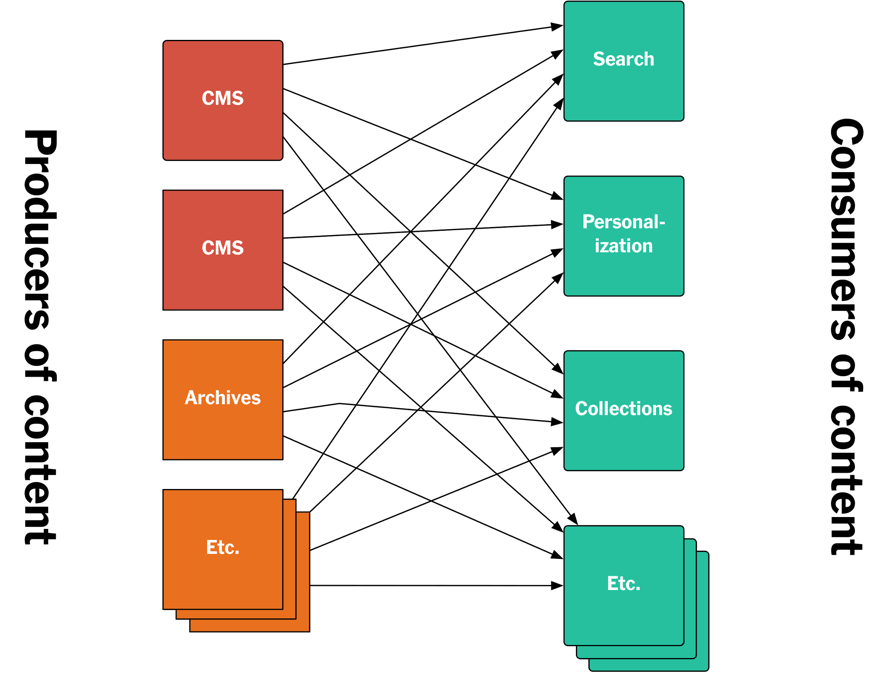
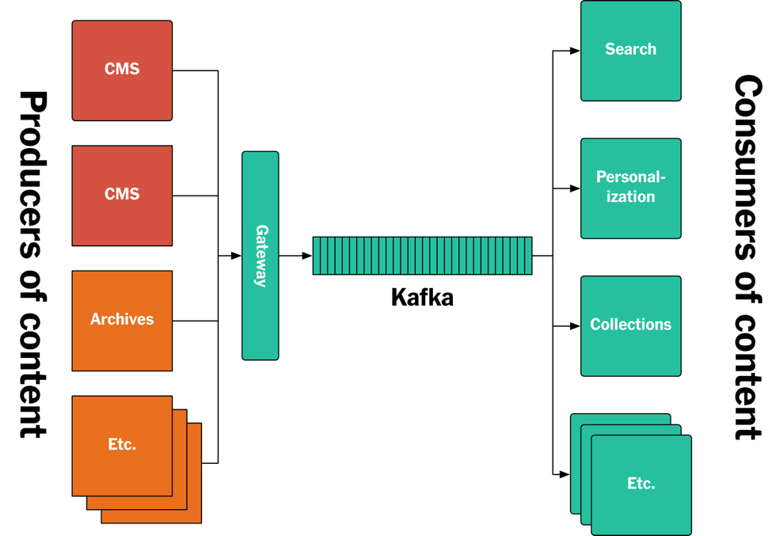
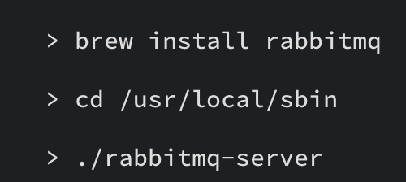
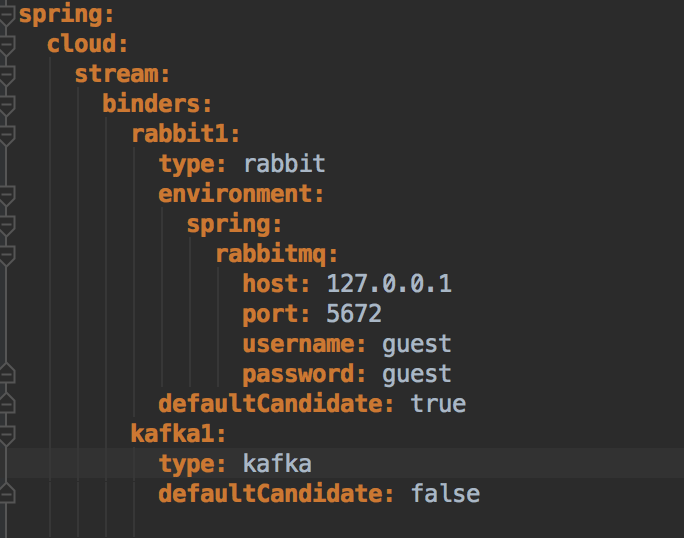

Kafka
Do It Yourself
Hi, my name is Tom.
Developer
Ordina Belgium
@tomvdbulck
https://github.com/tomvdbulck
Prerequisites
https://github.com/tomvdbulck/kafka-handson-workshop
Docker
Postman
RabbitMQ
Agenda
- What is Kafka
- A Kafka Cluster
- Kafka: When to Use it
- Kafka: 4 core API's
- Hands-On
Kafka
Kafka

Kafka: Design Goals
High volume publish-subscribe message and streams
Durable
Fast
Scalable
Kafka: Dumb Brokers
Smart Consumers
Retains all messages
A Kafka Cluster
- Zookeeper
- Broker
- Controller
- Topics
- Partitions
- Replication
- Producers
- Consumers
- Consumer offset
- Failover
Zookeeper
Zookeeper: Why does Kafka Need it
- Electing a Controller
- Cluster Membership
- Topic Configuration
- Quotas
- ACL: Who is allowed to read and write
Brokers
Node, Broker, Kafka Server => all the same
Hosts topics
Stores messages
The Controller
Manage State of Partitions and Replicas
Reassign Partitions
Topics
Virtual Group of partitions
Producers write messages.
Consumes read messages.
Partitions
Topics are split in partitions.
1 broker is leader.
Used to scale.
Partitions: Rebalancing
auto.leader.rebalance.enable: true (default)
also manual rebalancing possible
Replication
Fail-Over.
Each broker: Maintains list of In Sync Replicas.
Brokers with replicas only keep these in sync with the Partition Master.
Replication: They all die.
Wait for an ISR replica to come back
Or
choose the first replica which comes back.
Replication: Acknowledgement
Choose for acknowledgement by 0, 1 or all (ISR) Replicas.
Only for producers.
Extra options:
Disable unclean leader election.
Minimum ISR size.
Producers
Push messages into Kafka Topics.
Can provide partition key.
Message gets forwarded to the leader.
Messages / Records
Unique offset within partition.
Remain until TTL or after compaction.
- key
- value
- timestamp
Consumers
Reads messages from a specific offset.
Asks for messages - pull, as not to overload.
Can only read messages which are fully in sync.
Consumer Offset
Stored in Kafka. (previously Zookeeper)
Exactly once: read and commit offset in transaction
The consumer can change this offset.
Consumer Groups
1 partition can be read by 1 consumer of the group. parallel processing.
When to Use It
- Compared with RabbitMQ
- Customer Use Cases
Vs RabbitMQ
Vs RabbitMQ: choose (Rabbit)MQ when:
More control/guarantees per-message.
Complex routing to consumers.
More variety in: point to point, request/reply and publish/subscribe messaging
Vs RabbitMQ: Choose Kafka when:
Stream with complex routing.
Throughput (100k/sec)
Event Sourcing
Vs RabbitMQ: choose (Rabbit)MQ when:
Ease of Operations.
Security.
Vs RabbitMQ: choose Kafka when:
Performance.
Can deal with large surge of Producers.
Use Cases
LinkedIn New York Times Zalando
Use Case: Linkedin

Used to move every type of data between other systems.
Use Case: Linkedin
2 trillion messages / day
1800 brokers
650 terabytes consumed for 170 terrabytes of messages (in 2015 - 800 billion msg/day)
Use Case: New York Times
API based architecture
Use Case: New York Times
Use Case: New York Times

Use Case: New York Times
Simplify development process.
Tracking of every individual update throughout the system.
Mental shift for Developers required.
Use Case: Zalando
New platform:
throughput/capacity
democratization of data
event-driven system: event source processing
Kafka: 4 Core API's

Kafka: 4 Core API's
- Producer API: publish to a topic
- Consumer API: subscribe to a topic
- Streams API: stream processor
- Connector API: resuable producers and consumers
Producer API
Consumer API
Kafka Streams

Kafka: Kafka Streams

Connectors
Hands On
Hands On: Agenda
- Prerequisites
- Docker
- RabbitMQ
- The application
- DIY: Native
- DIY: Reactor
- DIY: Spring Cloud Stream
- DIY: Use RabbitMQ
Pre-Requisites

https://www.rabbitmq.com/download.html

Go to http://localhost:15672/
Use: guest/guest (super safe)
Verify if the port config in application.yml corresponds.
Docker
DIY: Native
DIY: Reactor
DIY: Spring Cloud Stream
DIY: switch to RabbitMQ
set defaultCandidate of rabbit to true
Docker
- Build: standardized way using Docker CLI in a DockerFile
- Ship: share the container - it is just a file
- Run: less overhead then a VM
Docker Compose
- Multi-container applications
- docker-compose.yml
- Software defined network
Single Container: DockerFile

Single Container: Get Started
Create the image
docker build -t kafka-zookeeper .
Startup the container
docker run --name a_name -i -t -p 2181:2181 -p 9092:9092 kafka-zookeeper
Single Container: Get Started
Access Kafka from outside the container: add the following parameters
-e ADVERTISED_HOST=localhost -e ADVERTISED_PORT=9092
Single Container: Topics
1 container with both Zookeeper and Kafka
> bin/kafka-topics.sh --create --zookeeper localhost:2181
--replication-factor 1 --partitions 10 --topic test
Retrieve a list of topics on Zookeeper
> bin/kafka-topics.sh --list --zookeeper localhost:2181
Describe a topic: leader / replicated nodes
> bin/kafka-topics.sh --describe --zookeeper localhost:2181
Single Container: Publish and Subscribe
Producer
> bin/kafka-console-producer.sh --broker-list localhost:9092 --topic test
This is a message
This is another message
Single Container: Consumer
> bin/kafka-console-consumer.sh --bootstrap-server localhost:9092
--topic test --from-beginning
Single Container: Result
- Single Container
- 1 zookeeper and 1 kafka node
- Data not stored
Demo: Do It Yourself
https://github.com/tomvdbulck/kafka-docker
Questions ?
Thanks for watching!
Now kick some ass!